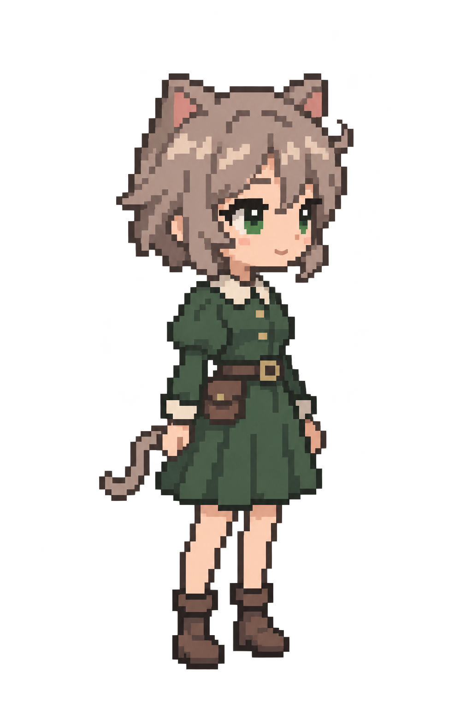
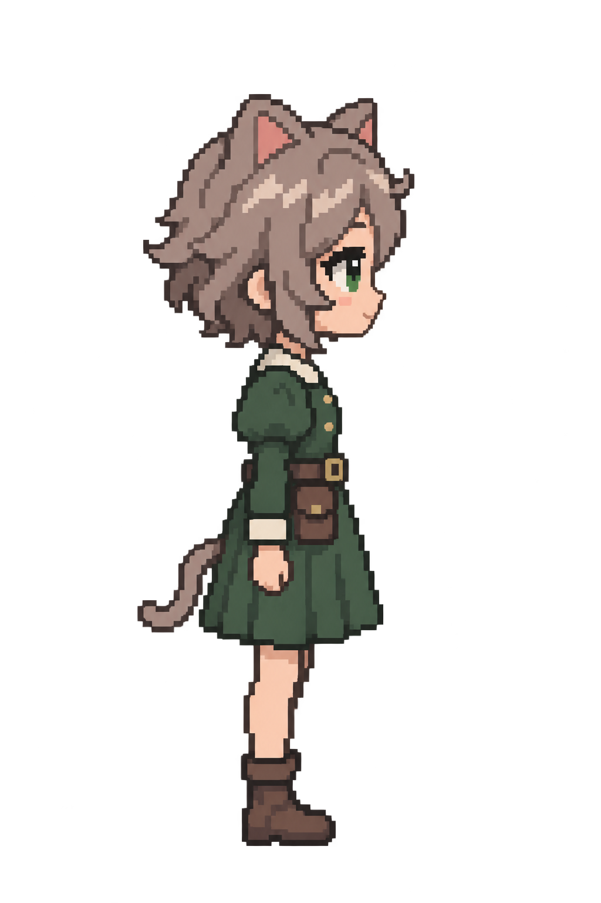
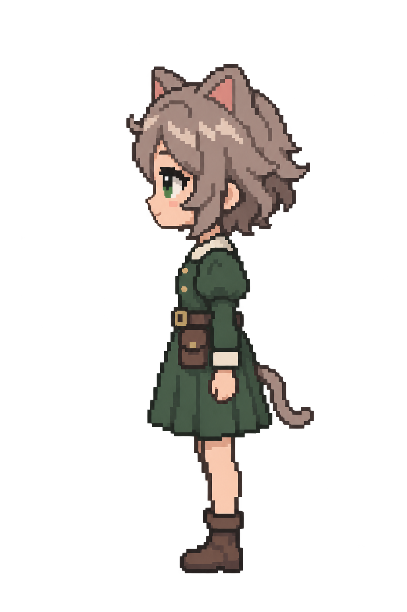

Idle · 3/4 斜正面
已选定的基础造型；双眼略有透视差异，头肩、裙摆和脚尖保持统一朝向。
查看原图 ↗浅灰棕蓬松短发、翠绿色眼睛、绿色探险裙装与棕色短靴。

已选定的基础造型；双眼略有透视差异，头肩、裙摆和脚尖保持统一朝向。
查看原图 ↗
沿用 B 的发型、裙装和腰包；侧面只保留一只主要眼睛，耳朵和尾巴不参与碰撞。
查看原图 ↗
由右侧面精确水平镜像；服装、发束和五官保持一致，没有重新生成另一张脸。
查看原图 ↗B 的基础造型已确认。这三张仍是角色原画，不是已验证的 32×48 原生 Sprite；先确认侧面，再规范像素网格、调色板和透明边缘，随后进入动画。正式游玩角色、物理与碰撞保持原样。
本阶段只有三个静态姿态，没有批量制作动画。已保留原游戏人物与之前候选原画，以便回退。